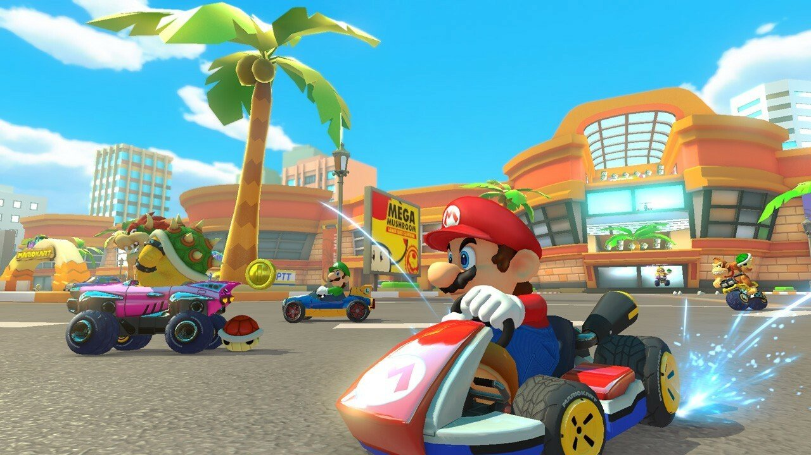
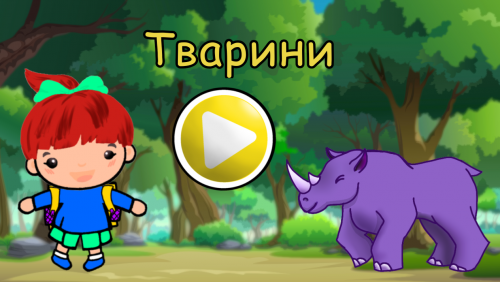
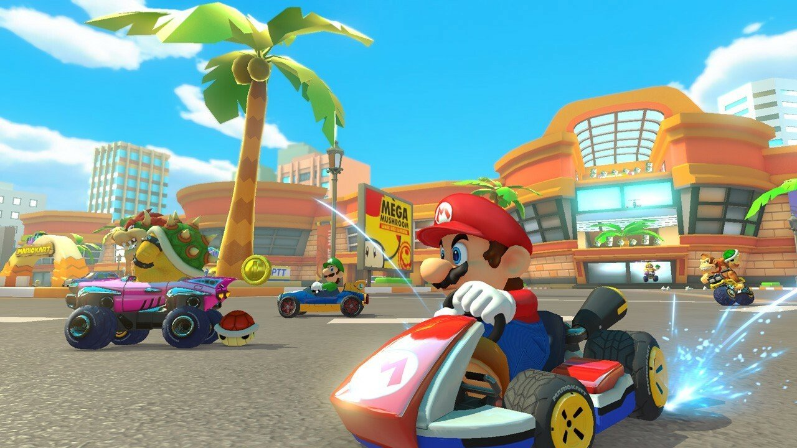
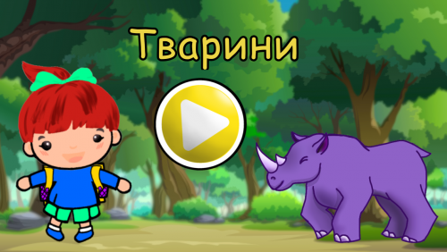

Світ без кордонів
Онлайн-ігри з'єднали мільйони людей з різних куточків світу, створюючи глобальну спільноту гравців. Від масштабних MMORPG на кшталт World of Warcraft до швидких батл-роялів типу Fortnite — вони стали не просто розвагою, а соціальним явищем, що змінило спосіб спілкування та взаємодії між людьми.
Гравці тепер створюють спільноти, організовують кланові війни, діляться досягненнями та досвідом. Онлайн-ігри стали платформою для соціальної взаємодії, де люди знаходять друзів, вивчають нові мови та культури, та навіть будують кар'єру в кіберспорті або стримінгу.
Найпопулярніші онлайн-ігри: від перших серверів до світових арен
Онлайн-ігри пройшли шлях від простих чатів і локальних боїв до масштабних віртуальних світів, де змагаються мільйони гравців. Вони стали не просто розвагою, а способом спілкування, кар'єрою і навіть частиною культури. Кожен матч — це нова історія, нові емоції і нові перемоги.
Від класичних MMORPG, де тисячі гравців досліджують величезні світи разом, до швидких шутерів, де кожна гра триває кілька хвилин, але сповнена інтенсивності та адреналіну. Онлайн-ігри пропонують безліч форматів та стилів гри, задовольняючи різні потреби та уподобання гравців.
 



MMO, Co-op і Battle Royale
З'явилися нові жанри — MMORPG (Massively Multiplayer Online Role-Playing Games) і Battle Royale, які змінили спосіб гри та взаємодії між гравцями. MMORPG дозволяють тисячам гравців одночасно перебувати в одному віртуальному світі, виконувати квести, битися з босами та досліджувати величезні території.
Battle Royale жанр приніс новий формат змагальних ігор, де десятки або навіть сотні гравців змагаються за перемогу на великій карті. Цей формат став надзвичайно популярним завдяки своїй динамічності та непередбачуваності.
Онлайн став основою ігор, а технології дозволили гравцям з різних континентів грати разом у режимі реального часу без затримок та лагів. Сучасні онлайн-ігри використовують передові технології для забезпечення стабільного з'єднання, справедливої гри та захоплюючого досвіду для мільйонів гравців одночасно.
Майбутнє онлайн-ігор виглядає ще більш перспективним. З розвитком хмарних технологій, штучного інтелекту та віртуальної реальності, ми можемо очікувати ще більш інноваційних та захоплюючих онлайн-досвідів, які об'єднають ще більше людей по всьому світу.